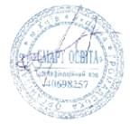
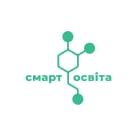
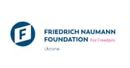

№1064
8/05/2024
Сертифікат тренера
засвідчує, що
23.05.2023-30.05.2023
Завершив курс «Психосоціальна підтримка освітян»
Розробниці та тренерки:Ольга Савиченко, Ірина Тичина, Наталя Портницька та Світлана Ройз
Форма:дистанційна
Вид:практико-орієнтований курс
Обсяг у годинах і кредитах ЄКТС:
135 годин (4,5 кредити ЄКТС)
135 годин (4,5 кредити ЄКТС)
Здобуті компетентності
Голова правління ГО “Смарт освіта”


